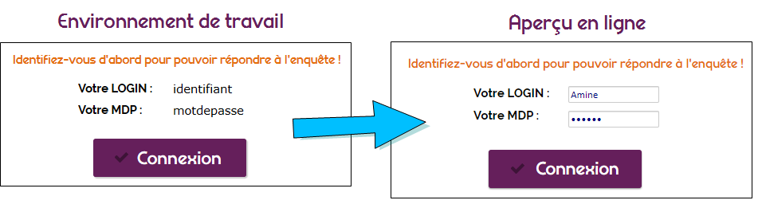
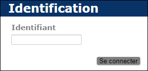
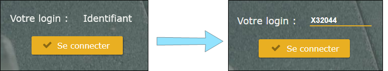
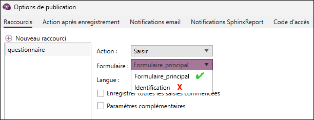

IDENTIFICATION DU RÉPONDANT
L'option Identification du répondant permet de paramétrer les identifiants des répondants autorisés à se connecter à l'enquête en ligne. C'est également à partir de cet écran qu'il est possible de mettre en place un formulaire personnalisé à utiliser pour s'identifier ou en cas d'éventuelles modifications des réponses par le répondant.

L'option Pas d'identificateur est cochée par défaut. Pour mettre en place une identification des répondants, vous pouvez utiliser les types d'identificateurs suivants :
Cette option vous permet de créer manuellement des identificateurs de saisie ou d'importer directement un fichier .txt ou .dic.
Le fichier d'identificateurs doit contenir les données de la manière suivante :
Identificateur=V1=V2=V3=…
identificateur1=Modalite1=Modalite2=Modalite2=…
identificateur2=Modalite2=Modalite2=Modalite1=…
-
La variable renseignée à la 1ère colonne sera considérée comme variable d'identification.
-
La première ligne doit toujours contenir les noms des variables.
EXEMPLE :
CodeClient=Prenom=Ville=Age
1eb31=Bruno=Annecy=25
3cr57=Jean=Grenoble=45
etc.
Cette option permet d'utiliser un annuaire externe pour accéder à l'enquête, il suffit d'insérer l'URL du script d'accès à l'annuaire dans le champ prévu à cet effet. Les répondants devront saisir un identifiant et un mot de passe pour accéder à l'enquête.
REMARQUE : (Dans le cas d'un annuaire externe) Si vous souhaitez mettre en place un formulaire personnalisé pour la saisie de l'identifiant, d'abord, cochez la case prévue à cet effet puis rajoutez les éléments listés ci-dessous sur le formulaire indiqué : 
- Une zone de texte contenant le mot-clé "Identifiant".
- Une zone de texte contenant le mot-clé "motdepasse".
- Un bouton d'enregistrement.

Si vous disposez déjà d'un panel sur votre compte SphinxOnline, vous pouvez directement le lier à votre nouvelle enquête. De cette façon les panélistes pourront y accéder en rentrant leur identifiant.
Pour ce faire, il faut indiquer les éléments suivants :
-
Le nom du compte.
-
Le nom de l'étude (Enquête profil).
REMARQUE : L'enquête sur laquelle vous allez appliquer une identification du répondant doit être sur le même serveur que l'enquête profil (panel).
Mettre en place un formulaire personnalisé pour la saisie de l'identifiant et pour la modification de la saisie
Saisie de l'identifiant : (type d'identificateur : Fichier / Panel).
Par défaut, la page permettant la saisie de l'identifiant se présente comme suit :

Pour mettre en place un formulaire personnalisé pour la saisie de l'identifiant, procédez comme suit :
-
REMARQUE : Une zone de texte contenant uniquement le mot-clé "Identifiant" ainsi qu'un bouton d'enregistrement (que vous pouvez renommer ) doivent être présents dans le formulaire indiqué.
Exemple : :
-
Cochez l'option Utiliser un formulaire pour la saisie de l'identifiant depuis l'onglet Identification du répondant.
-
Sélectionnez le formulaire à utiliser.
REMARQUE : Le raccourci doit toujours pointer vers le formulaire principal du questionnaire, c’est-à-dire celui qui contient les questions. Le formulaire d’identification, s’affichera automatiquement en amont du parcours du répondant.



Modification de la saisie :
Par défaut, la page permettant de modifier la saisie est comme suit :

Pour mettre en place un formulaire personnalisé pour modifier la saisie, procédez comme suit :
-
REMARQUE : Une zone de texte contenant uniquement le mot-clé "Motdepasse" ainsi qu'un bouton d'enregistrement doivent être présents dans le formulaire indiqué.
-
Cochez l'option Utiliser un formulaire pour la modification (demande de clé).
-
Sélectionnez le formulaire à utiliser.